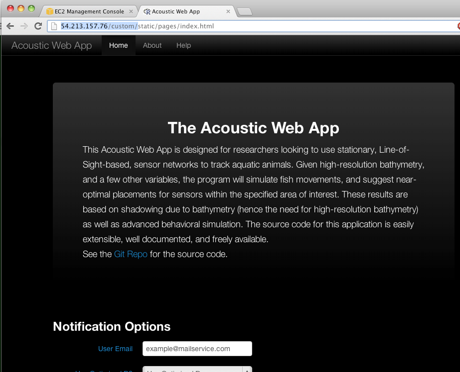
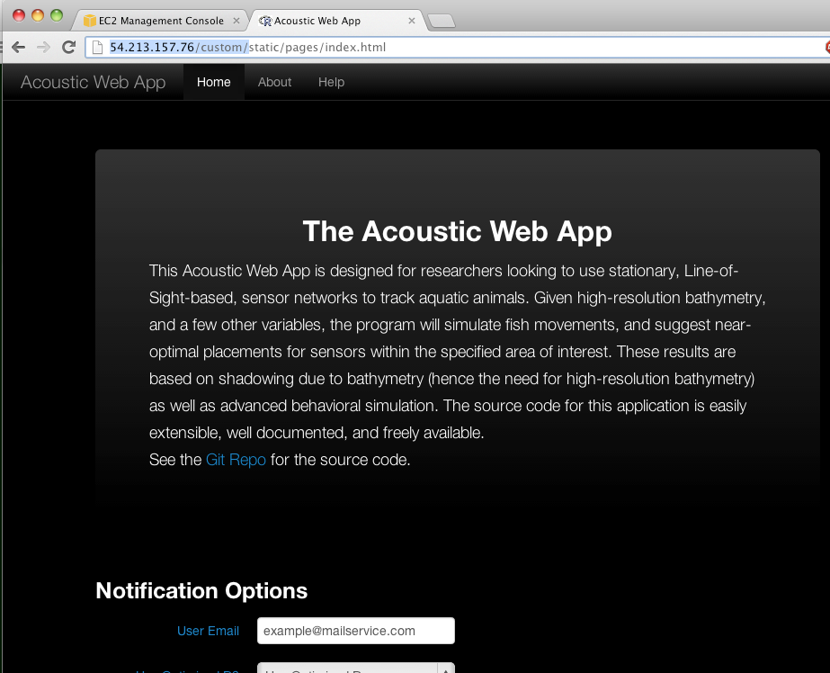

Geolocation Tool Documentation: AWS Setup
Kevin Weng
Go to http://aws.amazon.com/ and set up an account. You have to enter a credit
card, but you won't be charged unless you use lots of resources.
Launch the AWS Management Console
Sign in
You'll see this:
The guides are here: https://aws.amazon.com/documentation/
Click on "EC2"
Click on "Launch Instance"
Click "Quick launch wizard"
Select "Ubuntu Server 12.04.2 LTS for Cluster Instances"
Click "download"
This is a permission file that you will need to link to
on every use of AWS. Save in a safe place and don't lose it.
Mine is at:
/Users/kweng/data/PFRPLAB/projects/acoustic_geolocation_tool/AWS_ubuntu/Kevin_ubuntu_1.pem
Click "continue"
You'll see
Click "Launch"
Click "Close"
You need to set the security group, so take note of the
name of the security group for this instance. In this example it is
"quicklaunch-1". Look for this at the bottom of the
screen (scroll down in the bottom pane).
On the left side, click on "security groups"
 Click on the box for the line with the appropriate name
Go to bottom pane, click "inbound" tab
Click on the box for the line with the appropriate name
Go to bottom pane, click "inbound" tab
 Create a new rule, pull down and select "HTTP"
Hit "add rule" and then "apply rule changes"
Then you should see (note that a new line has appeared under TPC Port (Service):
Click "Elastic IPs"
Allocate new address
Yes, allocate
Now go to top section of page, right click on light blue
line with your IP address, and hit "associate"
Create a new rule, pull down and select "HTTP"
Hit "add rule" and then "apply rule changes"
Then you should see (note that a new line has appeared under TPC Port (Service):
Click "Elastic IPs"
Allocate new address
Yes, allocate
Now go to top section of page, right click on light blue
line with your IP address, and hit "associate"
 Select the instance (there should only be one, unless
you have installed other instances on your AWS)
Click "Yes, associate"
Copy the IP address you see here:
Select the instance (there should only be one, unless
you have installed other instances on your AWS)
Click "Yes, associate"
Copy the IP address you see here:
 Mine is 54.213.157.76
Click "instances" on left pane
Right click on the light blue line and hit
"connect"
Mine is 54.213.157.76
Click "instances" on left pane
Right click on the light blue line and hit
"connect"
 You'll see:
Find where you put the permission file and copy the
path. Paste into "private key path" box. You may wish to
click "save key location"
Click "Launch SSH Client"
Allow Java to run
If you are on a mac you might see this:
You'll see:
Find where you put the permission file and copy the
path. Paste into "private key path" box. You may wish to
click "save key location"
Click "Launch SSH Client"
Allow Java to run
If you are on a mac you might see this:
 Allow it
Allow it
 Accept it
Accept it
 Say yes
Say yes
 Yes, keep saying yes to everything.
If successful you'll get a command line box:
Install git by typing in your command window:
sudo apt-get install git
Yes, keep saying yes to everything.
If successful you'll get a command line box:
Install git by typing in your command window:
sudo apt-get install git
 Type "Y"
It will run, and install git.
In your command window, type:
git clone
href="https://github.com/gregorylburgess/acoustic-deploy.git">
https://github.com/gregorylburgess/acoustic-deploy.git
This is downloading the the tool and the bathymetry to
your AWS instance, so may take a while. If you get a failure, try
again.
Type
cd acoustic-deploy
Type: source scripts/install.sh
hit enter, and it will start doing lots of stuff. Keep
hitting enter and Y
We've never seen this before:
Type "Y"
It will run, and install git.
In your command window, type:
git clone
href="https://github.com/gregorylburgess/acoustic-deploy.git">
https://github.com/gregorylburgess/acoustic-deploy.git
This is downloading the the tool and the bathymetry to
your AWS instance, so may take a while. If you get a failure, try
again.
Type
cd acoustic-deploy
Type: source scripts/install.sh
hit enter, and it will start doing lots of stuff. Keep
hitting enter and Y
We've never seen this before:
 Keep the local version.
When it's done you should see:
Keep the local version.
When it's done you should see:
 You need to create a directory for images, since the
tool doesn't yet have permission to create folders. Type:
mkdir img
Type:
sudo nohup Rscript PublicServer.R
Open a new tab in your web browser
Put in the IP that you copied before, and add
/custom/base. Mine is
54.213.157.76/custom/base
You should see this:

DO NOT CLOSE THE SSH TERMINAL WINDOW!!!!
If you need to kill a process, go back to the SSH terminal, type ctrl-C a few times if necessary. You will have to restart it, by the command you used
originally, sudo nohup Rscript PublicServer.R If you did this, hit reload on your browser where the tool is.
You need to create a directory for images, since the
tool doesn't yet have permission to create folders. Type:
mkdir img
Type:
sudo nohup Rscript PublicServer.R
Open a new tab in your web browser
Put in the IP that you copied before, and add
/custom/base. Mine is
54.213.157.76/custom/base
You should see this:

DO NOT CLOSE THE SSH TERMINAL WINDOW!!!!
If you need to kill a process, go back to the SSH terminal, type ctrl-C a few times if necessary. You will have to restart it, by the command you used
originally, sudo nohup Rscript PublicServer.R If you did this, hit reload on your browser where the tool is.